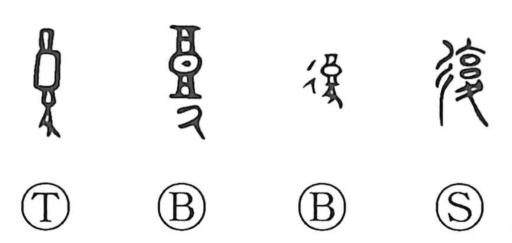

復

Kun: mata | On: fuku
to return ・ to restore ・ to repeat
Explanation
復 is a phono-semantic character. On the right, 夏 serves as the phonetic, giving the on reading fuku; it originally depicts an inverted measuring vessel used for gauging capacity. On the left is 彳, the “road” sign, which is the left half of 行, the crossroads graph. With the road determinative added to the phonetic, the character comes to mean returning along a way—going back to the origin. From this core sense develop the ideas of repaying and doing something again, as reflected in compounds like 復讐 (vengeance), 報復 (retaliation), and 反復 (repetition).